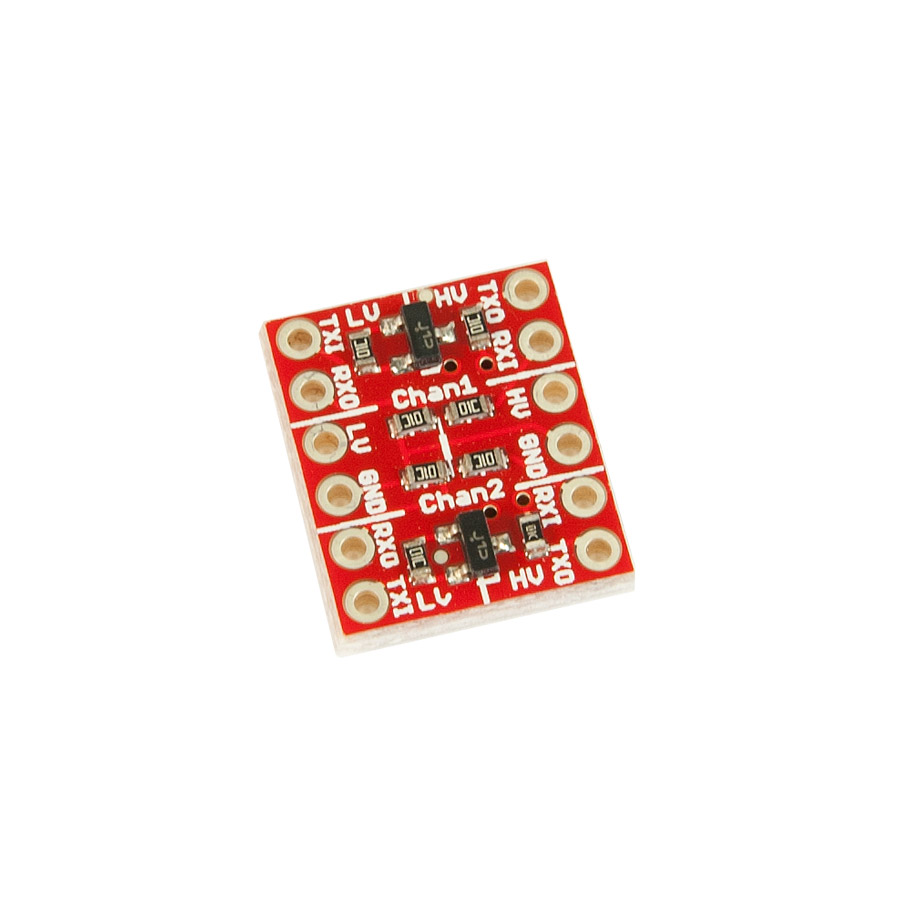
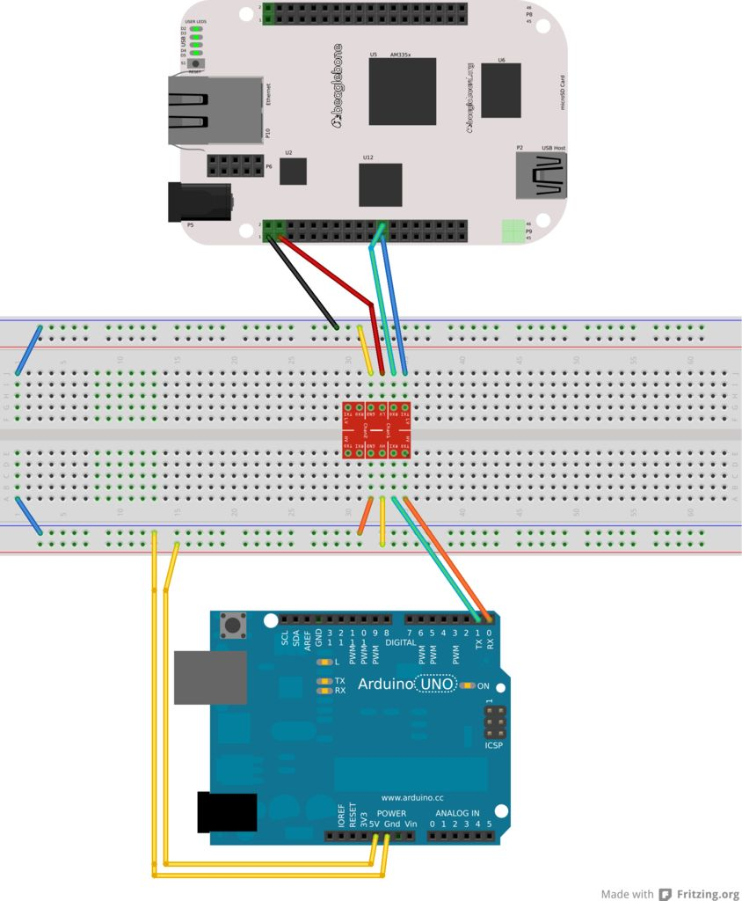

SortME V2
Currently, the SortME V2 robot uses a BeagleBone Black, an arduino Uno, an ABS plastic base, 4 sparkfun meccanum wheels, a logitech c120 webcam and 4 servo city micro gear motors.
BeagleBone Black and Arduino communication
The target setup for SortME V2 is that the beagleBone Black captures and processes the image. It will then send either a character or an integer to the arduino via TTL Serial ports. The arduino can respond to this by moving the motors accordingly. The Beagle Bone's ports run on 3.3 Volts and the arduino runs on 5 Volts. So, a logic level shifter will be needed. The SortME v2 robot will be useing the sparkfun model, shown here:
The setup of this converter with the beagle bone is shown here:
